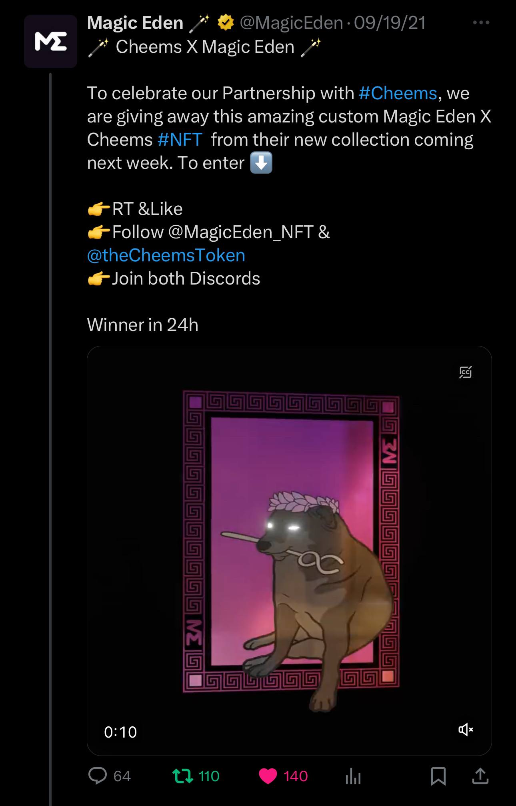

Cheems is literally the oldest real memecoin of Solana, a ton of OG solfluencers know Cheems.
Just have a look at the people following us.
To name a few:
March 29, 2023
Look at some notable followers:
Yes, even Magic Eden follows us. In fact, it goes beyond that. We were among the first partners of Magic Eden, supporting them when they had fewer than 2,000 followers on Twitter, long before their launch.
Cheems has been part of this ecosystem longer than most. When we launched, NFTs weren’t even a concept on Solana—the technology simply didn't exist. That's how longstanding Cheems is. We've been driving this ecosystem forward with deep love and passion.